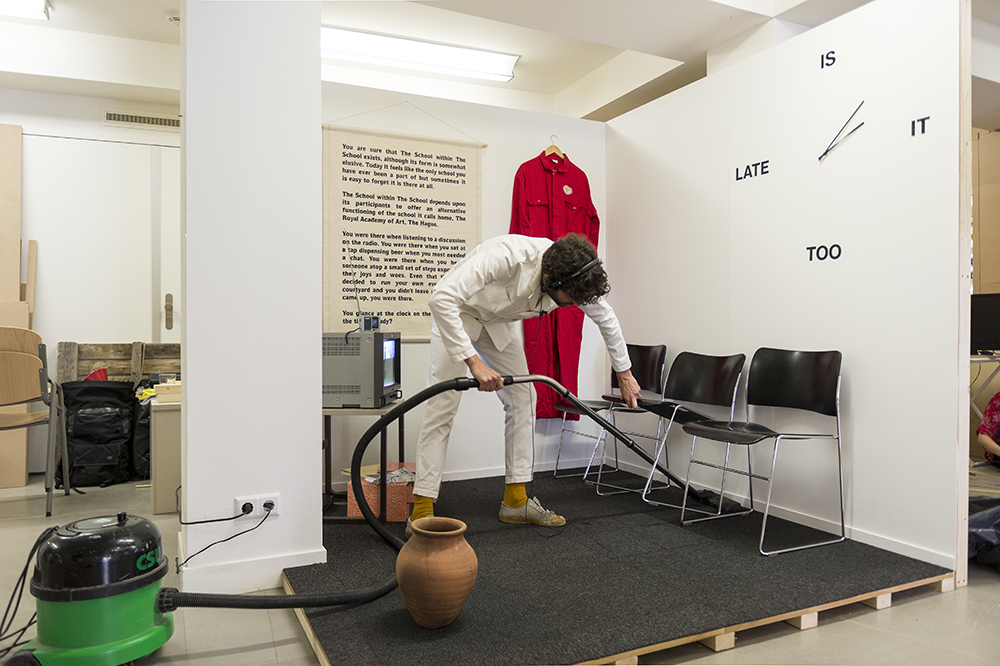
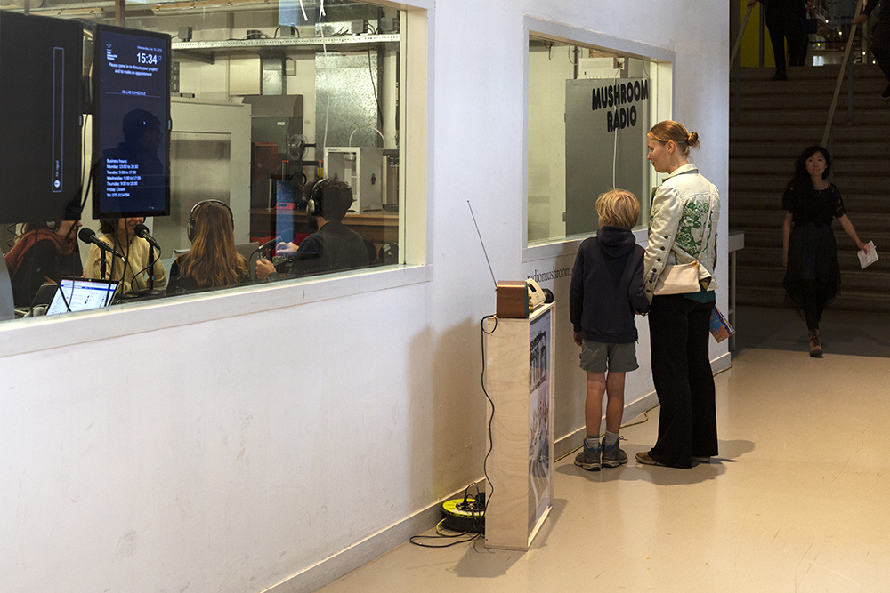
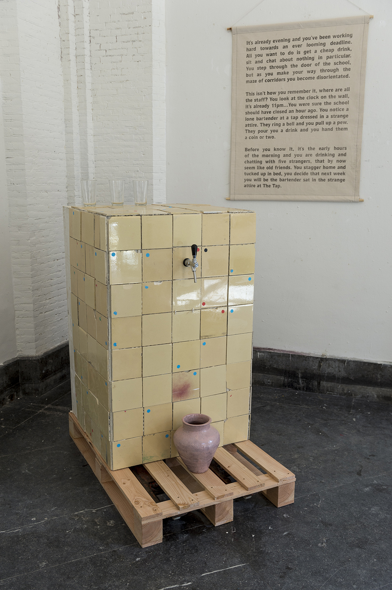
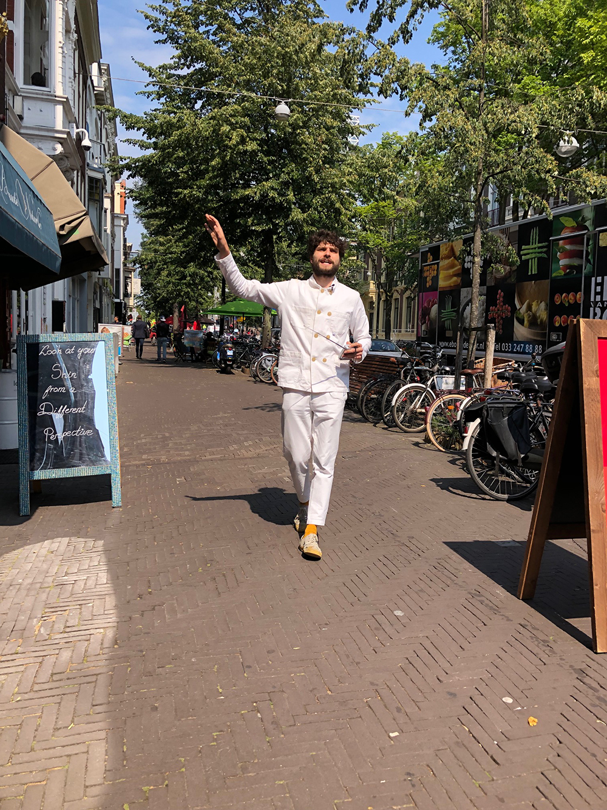
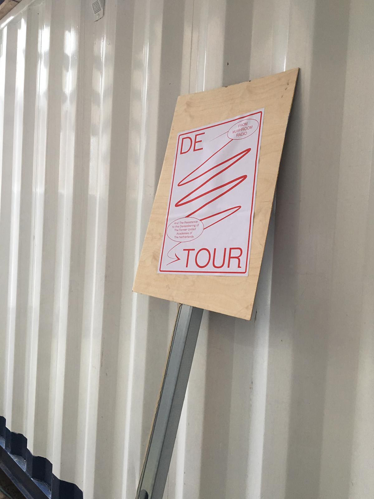
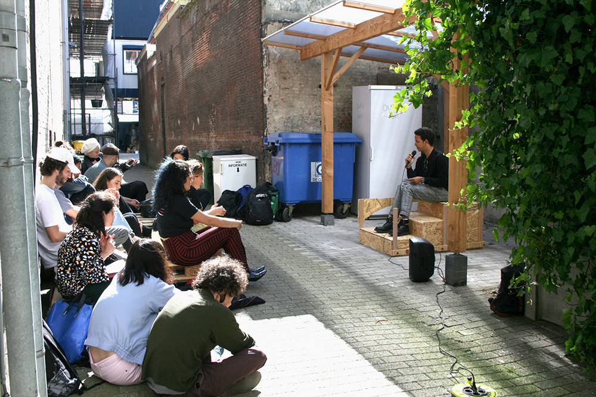

The School within The School
Art academies have ideally sought to offer a sanctuary for both artistic and social experimentation but they are not immune to the pressures of capital and have too become subject to corporatisation. The School within The School asks what tools are required to imagine a future that has an alternative set of values. Using a series of programmed interventions such as: a student-run bar, radio station, performance platform and alternative entrance it installs the everyday mechanisms of the school with renewed possibility. The project is an example of how architecture can be speculative while having its feet still firmly on the ground. The position of the architect is to be both actor and participant, manipulating their direct environment alongside the community in order to both change and imagine beyond its current functioning.
The project has been featured on The Future Architecture Platform and I speak about it with Bianca Elzenbaumer in Topolò on Radio Robida here. I also speak about the project in an interview on the ArtEZ platform, APRIA here. Or in Mister Motley Magazine in Dutch here.
Date 2019
at the Royal Academy of Art, The Hague (KABK)
with the students of the KABK





